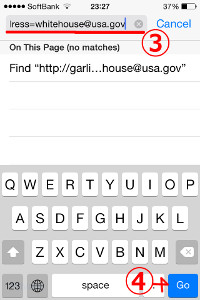
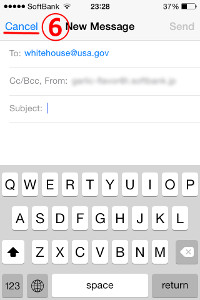
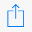
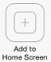
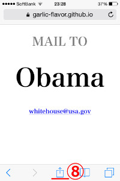
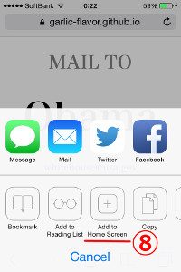
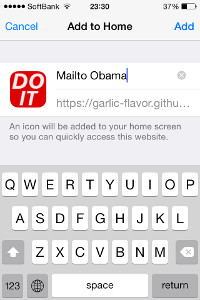
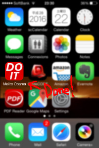

<<HOME
Shortcut Apps.
A shortcut sending email to someone.
How to use (about iPhone)
- Open Safari on your smart phone.
- Access this page.
- Edit the location bar like this.
https://garlic-flavor.github.io/ShortcutApps/mailto.html?name=Obama&address=whitehouse@usa.gov
- and tap 'Go' button.
- Then, your default mailer app is open.
- Once, tap 'cancel' and dlete a draft.
- Open Safari again.
- tap , then . 
- 
- Done.
Probably, a favicon does not suit for you. Fork
my repository!